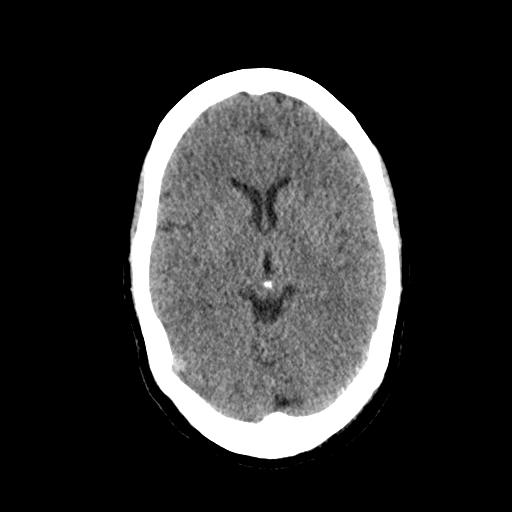
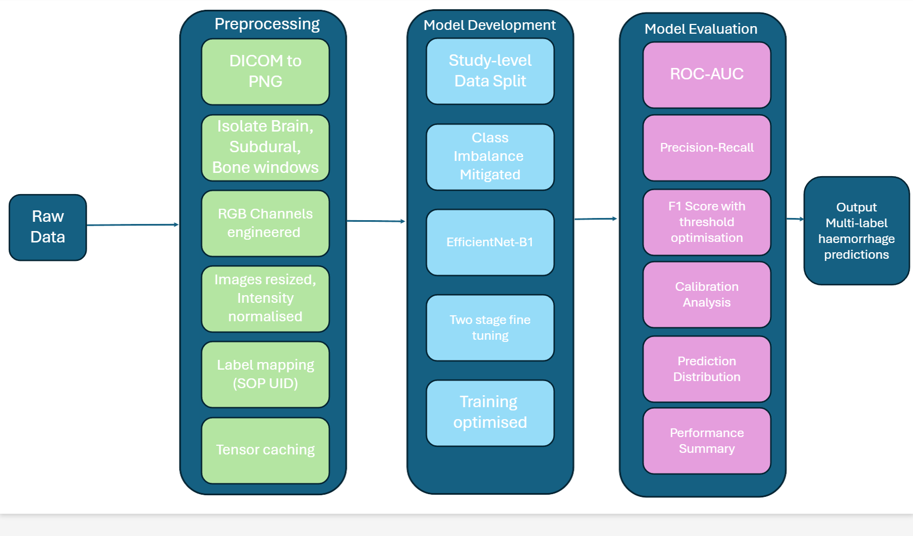
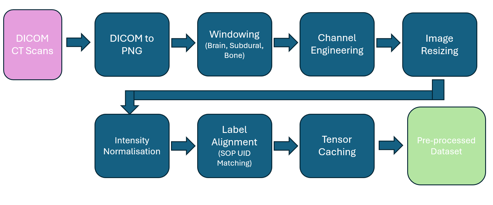
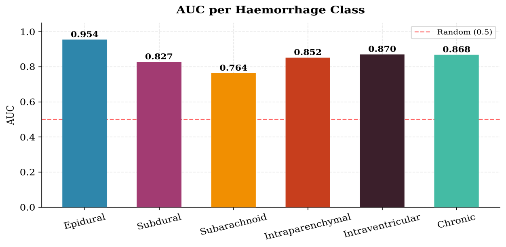
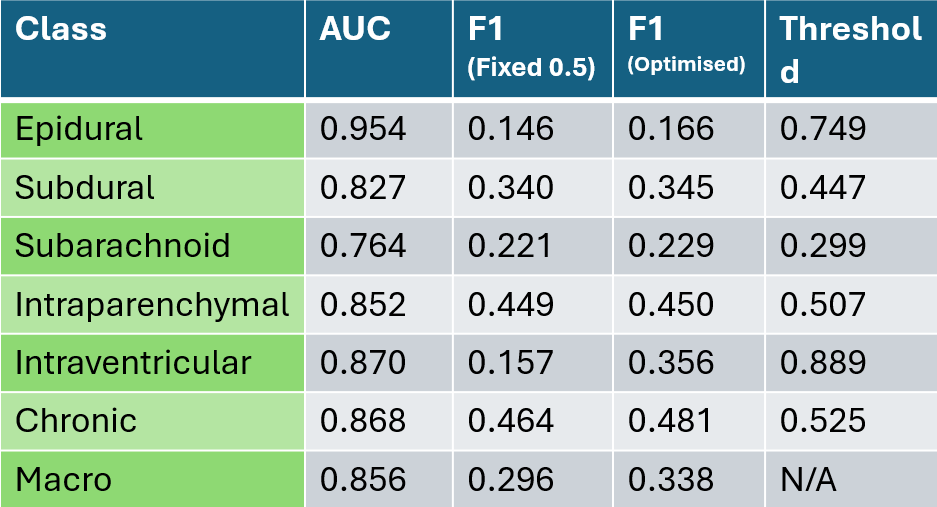
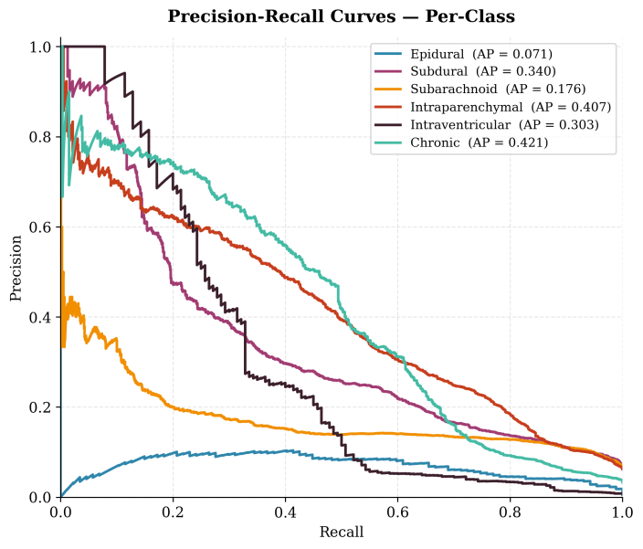
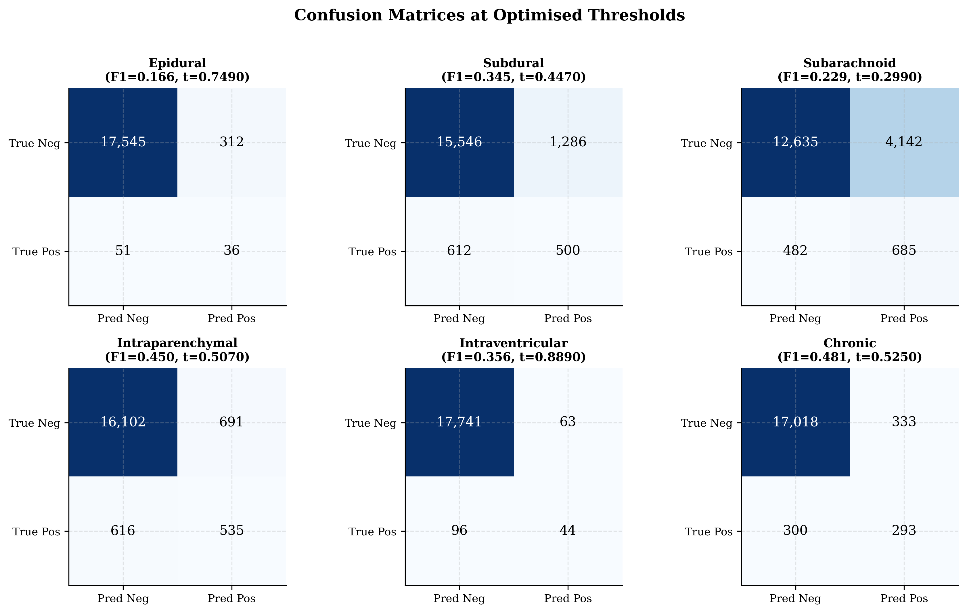
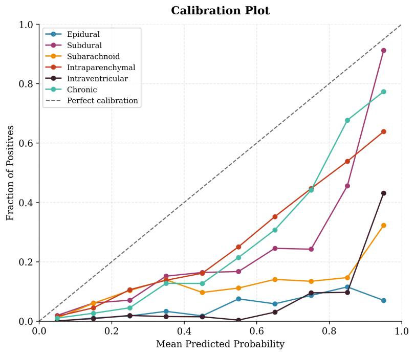
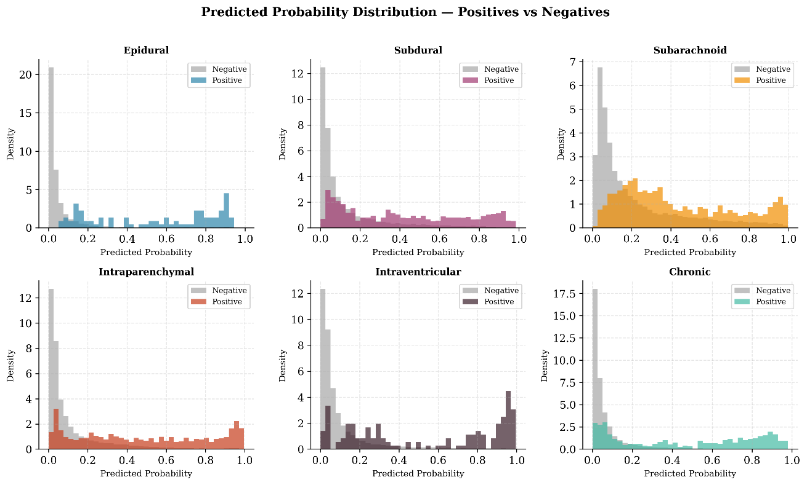
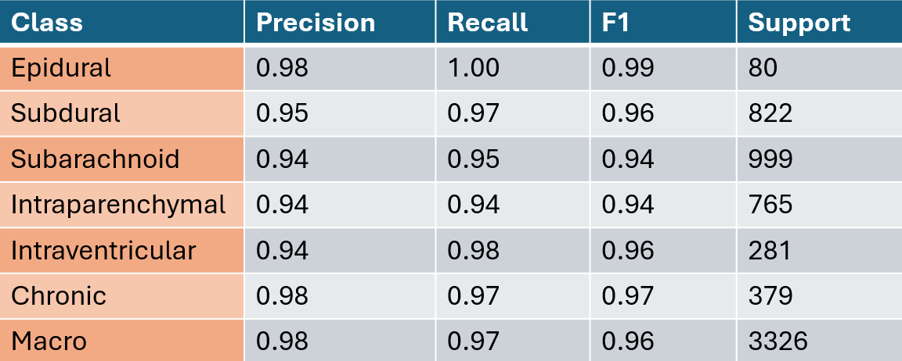

Deep Learning for Intracranial Haemorrhage Detection
My First-Class final-year dissertation (BSc AI & Robotics, University of Staffordshire): a multi-label CNN pipeline for classifying brain haemorrhage types from CT scans — and the data-leakage bug that made the first results too good to be true.
Overview
Intracranial haemorrhage (ICH) — bleeding inside the skull — is a life-threatening condition where fast, accurate diagnosis directly affects patient outcomes. Diagnosis today relies on radiologists manually reading CT scans, a process that is slow, dependent on scarce specialist availability, and vulnerable to fatigue and human error.
This dissertation builds a multi-label deep learning pipeline that detects and classifies six haemorrhage subtypes simultaneously — Epidural, Subdural, Subarachnoid, Intraparenchymal, Intraventricular and Chronic — from a single CT slice, using an EfficientNet-B1 backbone trained on the public CQ500 dataset.

Unlike a lot of published work in this space, the project's real contribution isn't just the model — it's a demonstration of how an evaluation methodology bug (slice leakage, more below) can silently inflate a medical imaging model's reported performance, and what fixing it actually costs.
Dataset
The RSNA intracranial haemorrhage dataset was the "gold standard" option — large and well annotated — but at ~500GB and 874,037 files it was out of scope for a single-machine student project. Instead the pipeline uses CQ500 (Chilamkurthy et al., 2018): a smaller, publicly available dataset professionally annotated by three senior radiologists, with 491 unique studies.
CQ500 ships as raw DICOM — a rich but heavy medical imaging format carrying scan metadata that's clinically valuable but useless for training an image classifier. Almost all of the preprocessing work below exists to strip that down to something a CNN can learn from efficiently.
The Pipeline
The project follows a full pipeline from raw scan to trained classifier: preprocessing, model development, and evaluation.

Model selection was done by prototyping ResNet-18, EfficientNet-B0 and EfficientNet-B1 on a smaller subset. All three learned (~60% accuracy after 10 epochs), but EfficientNet-B1 gave the best trade-off of accuracy vs. training cost, so it became the backbone for the full project.
The preprocessing stage turned out to matter as much as the model choice:

- DICOM → PNG: strips the heavy embedded metadata that isn't relevant to classification.
- Windowing: CT scans store pixel intensity in Hounsfield Units across a range standard images can't represent. Three clinically relevant windows — brain, subdural and bone — were extracted to highlight different haemorrhage characteristics.
- Channel engineering: the three windows were mapped onto the R, G and B channels respectively, so a single three-channel image carries three different clinical views instead of one greyscale scan repeated three times — giving the model richer input for free.
- Label alignment: haemorrhage annotations (from the BHX label set) were joined to each CT slice via its DICOM SOP instance UID, so every image maps to the correct ground-truth label.
- Normalisation & tensor caching: intensities were normalised for stable training, and pre-processed tensors were cached to disk so images didn't need re-decoding every epoch — this alone cut per-epoch training time from ~20 minutes to under 5.
Dealing with Class Imbalance
Medical imaging datasets are almost never balanced, and CQ500 was no exception — fewer than a quarter of slices contain a haemorrhage at all, and the rarest class (Epidural) makes up just 0.5% of the data. Left unaddressed, this collapses into a model that scores well by simply predicting "negative" for everything.
Three techniques were combined to fight this:
- Class-based weighting — correctly identifying a haemorrhage was weighted 3x higher than a correct negative, reflecting the real-world asymmetry: a missed haemorrhage risks a fatality, a false alarm risks a second scan.
- Stratified sampling — the train/validation split was built class-by-class rather than as one random split, so rare classes like Epidural weren't at risk of ending up almost entirely in one partition.
- Rare-class oversampling — extra copies of rare positive cases were added to the training set, accepting a small overfitting risk in exchange for the model actually seeing enough of them to learn from.
Training Optimisation
Several techniques targeted training stability and speed, all run on a single machine with limited compute:
- Transfer learning: a pretrained EfficientNet-B1 backbone, fine-tuned in two stages — the classification head trained alone for 5 epochs, then the full backbone unfrozen with a lowered learning rate to avoid destabilising the pretrained features.
- CUDA prefetching to keep the GPU fed, since Windows made multi-worker data loading unstable at 1–4 workers.
- Automatic Mixed Precision (AMP), roughly doubling usable batch size within the same GPU memory budget.
- Weight decay + early stopping (monitoring a blended AUC/F1 score) plus light, conservative data augmentation — no flips, since flipping brain anatomy risks teaching the model incorrect spatial patterns.
Results
After correcting the data split (see below), the model reached a macro ROC-AUC of 0.856 across all six haemorrhage types:

Epidural scored highest (0.954 AUC) despite being the rarest class — likely because its distinctive biconvex shape is visually easy for a CNN to key onto. Subarachnoid scored lowest (0.764), consistent with its thin, diffuse appearance being genuinely harder to detect at the single-slice level.
AUC alone doesn't tell the whole story, though. A fixed 0.5 decision threshold produced a weak macro F1 of 0.296; per-class threshold calibration lifted that to 0.338:

Precision-recall behaviour varied sharply by class — rare classes like Epidural and Subarachnoid saw precision collapse quickly as recall increased:

The confusion matrices at each class's optimised threshold, and the calibration/probability-distribution plots, are below for anyone who wants the full picture:



The Slice Leakage Finding
This is the headline result of the dissertation. The first version of the model — split into train/validation at the slice level — scored a suspiciously good macro F1 of 0.96, with per-class F1 between 0.94 and 0.99:

That result was competitive with, or better than, published models trained on datasets many times larger — which is exactly the kind of result that should make you suspicious rather than pleased. Investigating why led to the real finding: slice leakage.
CQ500 is a study-level dataset — each patient's CT study contains many slices taken only a few millimetres apart, so adjacent slices from the same patient are near-identical. A naive slice-level split can put two virtually identical slices from the same patient on opposite sides of the train/validation boundary. The model isn't being tested on unseen data at that point — it's being tested on an image it has effectively already memorised.
Re-doing the split at the study level — keeping every slice from a given patient entirely on one side of the split — dropped macro F1 from 0.96 down to 0.338, and macro-AUC to 0.856. That's a big, uncomfortable drop, but it's the honest number: the earlier 0.96 wasn't measuring the model's ability to generalise to new patients, it was measuring how well it could recognise images it had already seen in slightly different form.
The broader point stands beyond this one project: any medical imaging paper reporting high performance without explicitly confirming a study/patient-level split deserves a second, sceptical look.
Discussion & Limitations
A few limitations are worth being upfront about. The validation set did triple duty — early stopping, threshold calibration, and final reporting — which introduces some optimism bias; a proper three-way train/validation/test split would have avoided that at the cost of shrinking an already small dataset (491 studies) further. The model also classifies slice-by-slice, with no awareness of neighbouring slices, even though haemorrhages often physically span several of them.
Future directions include training on the much larger RSNA dataset, giving the model context from adjacent slices, and aggregating slice-level predictions up to a single study-level diagnosis — which is closer to how this would actually need to work clinically.
Conclusion
The project demonstrates that a computationally efficient CNN (EfficientNet-B1) can reach meaningful discriminative performance (0.856 macro-AUC) on multi-label ICH classification even with a small dataset and modest hardware — while also showing, very concretely, that evaluation methodology matters as much as model architecture. A model is only as trustworthy as the way it was tested, and an artificially high number is worse than a modest, honest one.
References
Chilamkurthy, S. et al. 2018, "Development and validation of deep learning algorithms for detection of critical findings in head CT scans", arXiv:1803.05854.
Flanders, A.E. et al. 2020, "Construction of a Machine Learning Dataset through Collaboration: The RSNA 2019 Brain CT Hemorrhage Challenge", Radiology: Artificial Intelligence, vol. 2, no. 3.
He, K., Zhang, X., Ren, S. & Sun, J. 2016, "Deep residual learning for image recognition", CVPR.
Tan, M. & Le, Q. 2019, "EfficientNet: Rethinking Model Scaling for Convolutional Neural Networks", ICML.
Roberts, M. et al. 2021, "Common pitfalls and recommendations for using machine learning to detect and prognosticate for COVID-19 using chest radiographs and CT scans", Nature Machine Intelligence, vol. 3.
Reis, E.P. et al. 2020, "Brain hemorrhage extended (BHX): Bounding box extrapolation from thick to thin slice CT images", PhysioNet.
Full reference list and detailed methodology available in the complete dissertation on request.